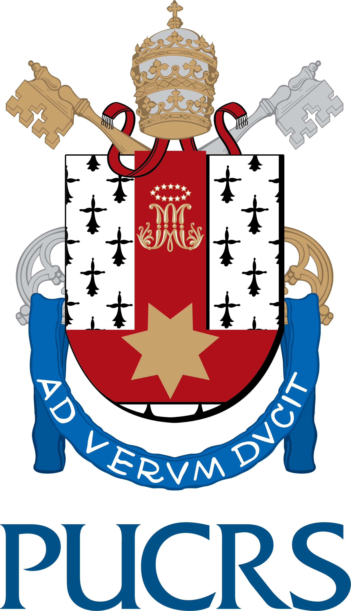

Miguel Cardoso Neves
I'm a Research Associate at the Pontifical Catholic University of Rio Grande do Sul (PUCRS). Previously, I was a Part-time Professor at (UFRGS), Brazil. I hold a PhD degree in Computer Science from UFRGS under the supervision of Prof. Marinho Barcellos. Between 2017 and 2018, I was also a research scholar at UC San Diego under the supervision of Prof. Kirill Levchenko. I got a B.Eng. degree in Computer Engineering in 2014 from UFRGS.
Curriculum Vitae
(in Portuguese, maintained by research agency CNPq)
Research interests
- Software defined networking
- Network function virtualization
- Network verification
- Network security
- Software security
- Program analysis
Research projects
- P4Sec: Securing Networks in the Programmable Data Plane Era. Funded by NSF and CTIC (2017–2020).
- Phoenix: em direção a uma arquitetura SDN sobrevivente. Funded by CNPq (2014–2017).
- Towards Better Networking Design and Maintenance. Funded by Microsoft Azure (2014–2017).
- SecFuNet: Security for the Future Networks using trusted components, funded by FP7 and CNPq (2011–2014).
- AltoStratus: Soluções de middleware para composição, execução e gerenciamento de serviços em nuvens híbridas e heterogêneas. Funded by CTIC (2011–2013).
Contact
Email: miguel dot neves at pucrs dot br Address: Av. Ipiranga, 6681 - Prédio 32 - Sala 120 Bairro Partenon - CEP 90619-900 - Porto Alegre, RS - Brazil
